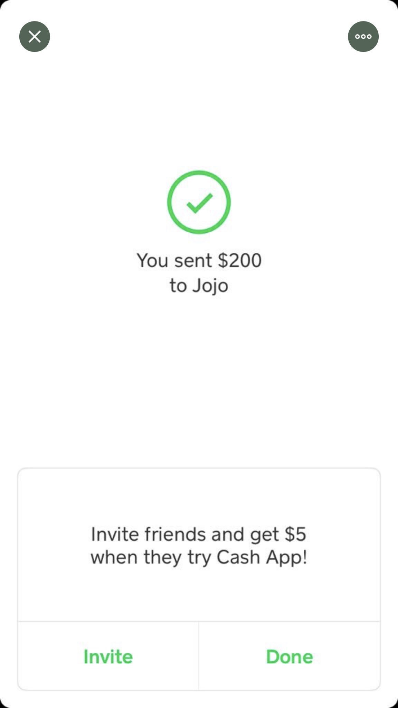

 Don’t keep your users guessing. Tell them what their action has led them to. For example, users would appreciate a “Thank You” message and a proof of purchase receipt when they’ve completed an online purchase. An example is the screen once you send money on CashApp. After you send money a green circle with a checkmark will appear letting the user know the payment sent. It will also tell the user how much and to who they sent the money to.